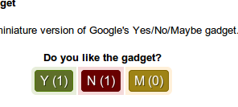
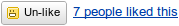
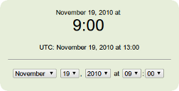
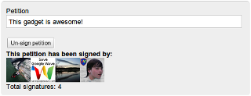
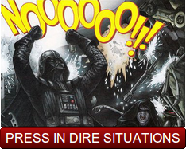

Wave Extensions
Here are some of my wave gadgets. Instructions for adding a wave gadget to a wave can be found on the Wave Extensions Gallery help page.
-
ContentZ (beta)
An all-purpose* embedding gadget. Just paste in a URL for a video or sound and the gadget embeds it in the wave. You can embed content from YouTube, SoundCloud, Vimeo, DailyMotion, and more.
*some purposes may not actually be supported at this time
Demo Wave (waveinabox.net)
Demo Wave (pre.rizzoma.com)Gadget URL: https://raw.github.com/zmyaro/wave-gadgets/master/time_zone/time_zone.xml
-

Yes/No/Mini Gadget
A miniature version of Google's Yes/No/Maybe Gadget. Like the Yes/No/Maybe gadget, just click one of the buttons to vote.
Extension Wave
Demo Wave (Google Wave)
Wave SampleGadget URL: https://raw.github.com/zmyaro/wave-gadgets/master/ynmini/ynmini2.xml
-

Google Like Button
A like button designed to look like those in Google Reader and Google Buzz.
Gadget URL: https://raw.github.com/zmyaro/wave-gadgets/master/like/like.xml
-

Time Zone Gadget (beta)
Displays a set date and time in each user's own time zone. Useful for planning an event involving people from different time zones.
Gadget URL: https://raw.github.com/zmyaro/wave-gadgets/master/time_zone/time_zone.xml
-

PetitionZ (beta)
A gadget that allows you to do petitions in Wave. Some advantages of this are that people can see the petition text being written in real-time and personal information can be retrieved from the user's Wave profile, so the user does not have to type it in manually.
Gadget URL: https://raw.github.com/zmyaro/wave-gadgets/master/petition/petition.xml
-

Instant “No” Button
Press in dire situations, cases of extreme disappointment, or when you just need a Star Wars reference.
Especially useful when your favorite wave service or MMO just got killed.
Gadget URL: https://raw.github.com/zmyaro/wave-gadgets/master/no/no.xml